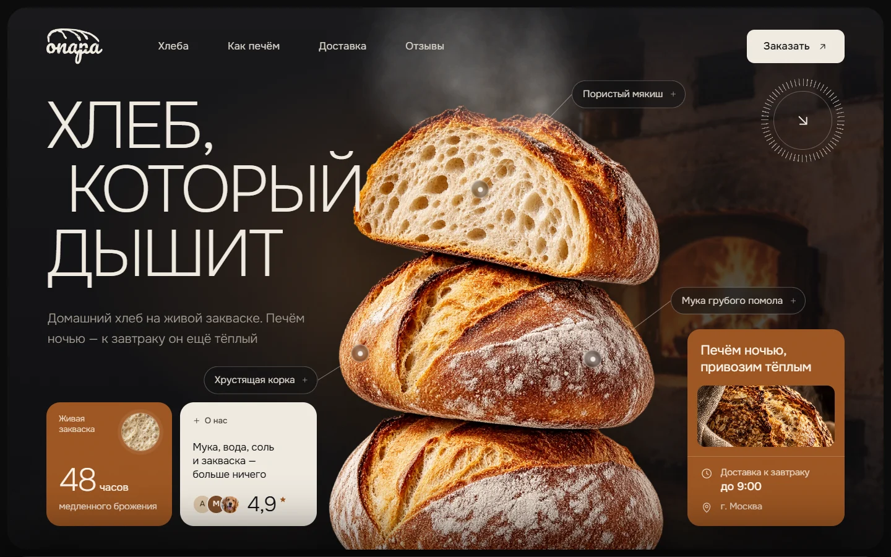

Опара
Лендинг домашней пекарни с хлебом на закваске и доставкой к завтраку. Открыть лендинг ↗

- Задача
- Передать атмосферу домашней пекарни и помочь посетителю выбрать хлеб и оформить заказ к завтраку.
- Решение и моя роль
- Разработала рукописный знак и иконку сайта, спроектировала и собрала лендинг для компьютеров и телефонов. Добавила выбор количества в карточках хлеба и общий счётчик заказа.
- Срок
- 2 недели · 2026
Десктопная версия
На большом экране посетитель видит ассортимент целиком, затем знакомится с процессом выпечки и переходит к заказу. На тёмном фоне фотографии подчёркивают фактуру корки и мякиша.

Адаптивная версия
На телефоне я перестроила карточки и отзывы в одну колонку, закрепила кнопку заказа в шапке и сделала горизонтальную галерею шагов выпечки.